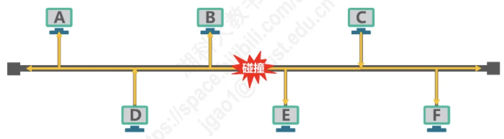
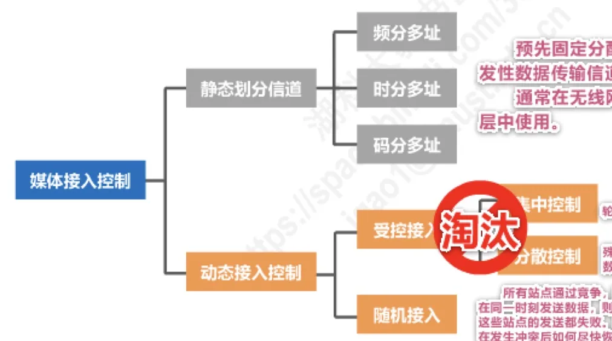

计算机通信与网络 · 第 3 章 数据链路层
3.6.1 媒体接入控制的基本概念
前几节讲的 PPP 用于点对点信道——链路上只有两个站点，谁先发谁后发不成问题。但在广播信道（共享信道）上，多个站点连接在同一传输媒体上，谁都可以随时发送，这就需要一套规则来协调。本节先把这个问题的提出方式和解决思路的整体框架讲清楚，后面三节再分别展开。
1. 什么是媒体接入控制
共享信道要着重考虑的一个问题，就是如何协调多个发送和接收站点对一个共享传输媒体的占用，这件事就称为媒体接入控制 MAC（Medium Access Control）。
为什么共享信道必须有这套机制？因为传输媒体在同一时刻只能承载一路信号：如果两个站点同时发送，它们发出的信号就会在媒体上叠加、互相破坏，谁的发送都失败。所以共享信道上的站点必须事先约定「什么时候可以发、发生冲突了怎么办」，这正是媒体接入控制要解决的问题。

2. 媒体接入控制方法的分类
解决思路可以分成两大类：一类是「事先把信道分好」，另一类是「用时再争」。前者称为静态划分信道，后者统称动态接入控制，动态接入控制又可以细分为受控接入和随机接入。

3. 静态划分信道
静态划分信道指预先固定分配好信道，典型做法有频分多址、时分多址和码分多址三种，具体原理留到 3.6.2 节展开。这里先记它的两个结论性特点：
- 这类方法非常不灵活，对于突发性的数据传输，信道利用率会很低——因为不管有没有数据要发，分给你的那份信道资源都已经划走了；
- 它通常在无线网络的物理层中使用，而不是在数据链路层中使用。
4. 受控接入（已被淘汰）
受控接入的含义是：站点不能想发就发，必须获得某种「许可」才能发送。按许可由谁发放，又分为集中控制和分散控制两种做法。
（1）集中控制——轮询
网络中有一个主站，以循环方式轮询每个站点有无数据发送，只有被轮询到的站点才能发送数据。它的最大缺点是存在单点故障问题：一旦主站出故障，整个网络的接入控制就全部失效。
（2）分散控制——令牌环
各站点是平等的，并连接成一个环形网络。有一个称为令牌的特殊控制帧沿环逐站传递，接收到令牌的站点才有权发送数据，并在发送完数据之后把令牌传递给下一个站点。这样就不会有单点故障，但令牌的传递本身会带来额外开销，环上某一处断链也会影响全网。
受控接入的这两种做法都已经被淘汰，现在主要作为理解接入控制思路的历史方案来看待。
5. 随机接入
随机接入的思路与受控接入相反：所有站点通过竞争，随机地在信道上发送数据。它不需要谁来发放许可，因此实现简单、轻负载时效率很高；代价是当恰巧有两个或更多的站点在同一时刻发送数据时，信号在共享媒体上就要产生碰撞（即发生了冲突），使得这些站点的发送都失败。
因此，这类协议要解决的关键问题有两个：如何尽量避免冲突，以及在发生冲突后如何尽快恢复通信。著名的共享式以太网采用的就是随机接入，它的具体方案 CSMA/CD 将在 3.6.3 节讲解；无线局域网同样属于随机接入，其方案 CSMA/CA 放在 3.6.4 节。
6. 共享式局域网的今天
随着技术的发展、交换技术的成熟和成本降低，具有更高性能的使用点对点链路和链路层交换机的交换式局域网在有线领域已经完全取代了共享式局域网。也就是说，今天的有线以太网里，媒体接入控制问题在很大程度上已经被交换机「用转发代替了争用」（详见 3.8 节集线器与交换机的区别）。
但媒体接入控制并没有过时：由于无线信道的广播天性，无线局域网仍然使用的是共享媒体技术，随机接入依然是它必须面对的核心问题。
本节小结
- 共享信道（广播信道）与点对点信道（如 PPP）的根本区别在于：多个站点共用同一传输媒体，必须协调占用，这就是媒体接入控制 MAC；
- 静态划分信道：频分多址、时分多址、码分多址，预先固定分配、不灵活、突发数据时信道利用率低，通常在无线网络的物理层使用；
- 动态接入控制：受控接入（集中控制的轮询有单点故障，分散控制的令牌环用令牌逐站传递）——已经淘汰；随机接入——所有站点竞争发送，冲突不可避免，关键是如何尽量避免冲突并尽快恢复；
- 共享式以太网采用随机接入（对应 3.6.3 节的 CSMA/CD），无线局域网同样采用随机接入（对应 3.6.4 节的 CSMA/CA）；有线领域的共享式局域网已被交换式局域网取代，但无线领域仍在使用共享媒体技术。